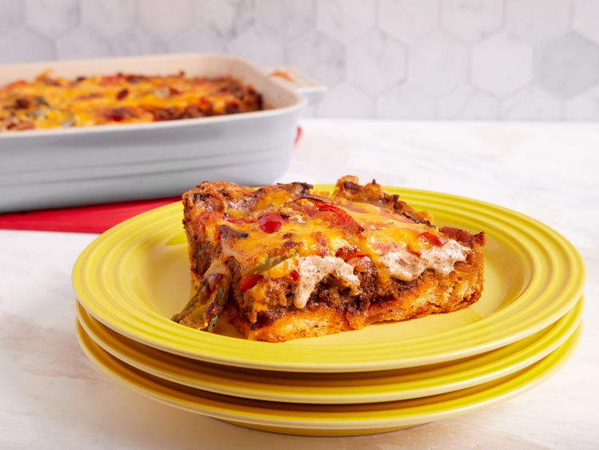

Lasagna aka John Wayne Casserole

The John Wayne casserole is a hearty and satisfying dish that's sure to please everyone at your table.
Despite the name, the John Wayne Casserole wasn't popularized by the actor himself, but by a fundraiser
cookbook "Cooking with Love from Cara and Her Friends" and the University of Mississippi Medical Center.
Ingredients:
- 1 can biscuits
- 1 pounds ground beef
- 3/4 cup water
- 1 medium onion, sliced
- 1 medium red bell pepper
- 1/2 cup sour cream
- 1/2 cup mayonnaise
- 8 ounces shredded cheddar cheese
- 2 medium tomatoes, sliced and diced
- 1 jar sliced jalapeno peppers
Steps to the John Wayne Casserole:
- Make the crust: Press the biscuit dough in the bottom and up the sides of a prepared baking dish. Bake in the preheated oven until lightly browned.
- Cook the meat: Cook the beef until crumbly. Drain the fat, stir in seasoning and water, and bring to a boil. Reduce the heat and simmer. Transfer the meat to a bowl.
- Cook the veggies: In the same pan, cook the sliced onions and peppers until tender.
- Make the creamy layer: Combine the sour cream, mayo, 1/2 of the Cheddar, and 1/2 of the cooked veggies in a bowl.
- Layer and bake the casserole: Layer the meat, tomatoes, onion-pepper mixture, jalapeños, and sour cream mixture on top of the biscuit dough. Sprinkle it with cheese. Bake in the preheated oven until the cheese is browned and bubbly.
Back to Recipe List